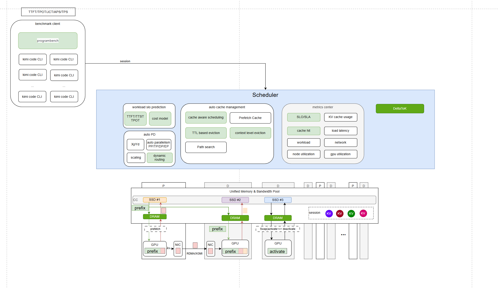
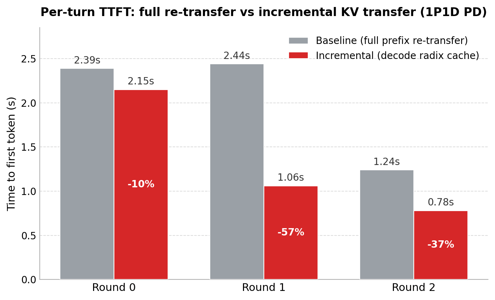
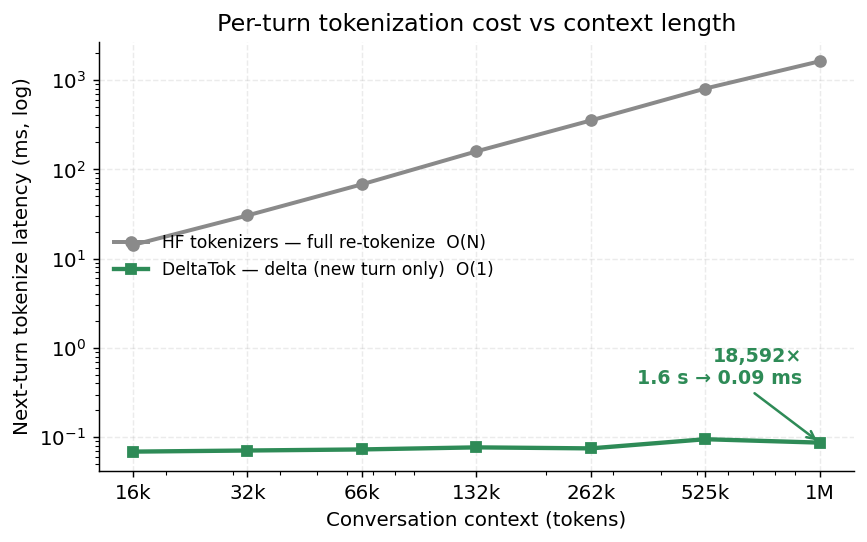
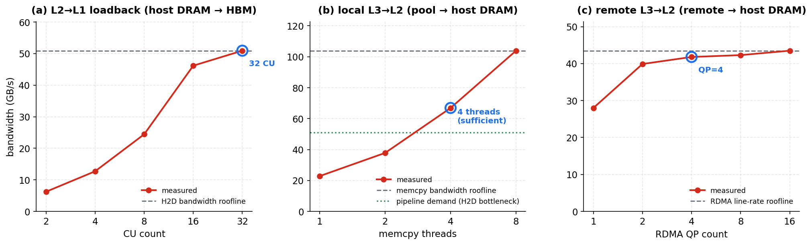

Agent System Panorama
All components · Algorithms · Infra — from "how the model thinks/acts" to "how the system runs at all, and runs fast"
0 · Opening: An Agent Is Not "A Longer Chat"
One-line definition: Agent = LLM + loop + tools + memory. It turns an LLM from "answering a single question" into "autonomously thinking, calling tools, and reading/writing memory, over and over, to reach a goal."
Why algorithms must change
Single-turn prompt→answer is no longer enough: you need planning, reflection, tool orchestration, memory management, and "which model size to use."
Why infra must change
Long sessions, ever-growing KV cache, bursty tool calls, non-migratable decode state — the traditional "stateless request dispatch" serving assumptions all break down at once.
Part One · Agent System Overview and All Components
First build a "map": one architecture diagram + the full data flow of a single request, then explain each component one by one (what it is / what it solves / hard parts). The next two parts drill only into the most critical of these.
1.1 The Lifecycle of a Single Request
retrieval/code/API] T --> MEM[(Memory read/write)] MEM --> H M -->|done| OUT([Output/action]) end M -. KV cache .-> SRV H -. prefix reuse .-> SRV subgraph SRV[Serving / Infra layer] SCH[Scheduler] --- KV[KV cache mgmt
PD disaggregation / tiered offload] end
Key observation: an agent task = many rounds of LLM calls interleaved with tool calls; each round feeds an ever-longer context to the model, so the underlying KV cache keeps growing and must be reused/moved/evicted — this is the root of the infra pressure.
1.2 All Components: What Makes Up an Agent System
loop / DAG] TOOL[Tool layer + execution] CTX[Context management] MEMO[Memory system] SKILL[Skill system] ORCH[Multi-agent orchestration] end subgraph SYS[System / Infra layer] SCHD[Scheduler] KVM[KV cache management] PD[PD disaggregation / tiered offload] end subgraph GOV[Governance layer] SAFE[Permissions / security / contracts] EVAL[Eval / regression / observability] end APP --> SYS GOV -. cross-cutting .- APP
| # | Component | What it solves | Key challenges / KB source |
|---|---|---|---|
| 1 | Model backbone + routing | Produce thoughts and actions; pick model by difficulty | Large-small model cooperation, per-step routing RouteLLM 2406.18665 / OI-MAS 2601.04861 / Chimera 2603.22206 |
| 2 | Harness / runtime | Drive the loop: assemble context, call tools, collect results, handle errors | "1.6% decisions + 98.4% infrastructure" Claude Code 2604.14228 |
| 3 | Control flow / planning | Decide the next step: loop or structured graph | loop vs DAG, bounded termination SGH 2604.11378 |
| 4 | Tool layer / execution | Real side effects like retrieval/code/API | function calling, MCP, sandboxing, CPU takes up to 88% of end-to-end 2511.00739 |
| 5 | Context management | Fit useful info into a limited window | five-tier compaction, context virtualization Claude Code 2604.14228 / Cursor DCD |
| 6 | Memory system | Retain and recall across turns/sessions | passive retrieval → active, learnable AutoMem 2607.01224 / SideQuest 2602.22603 |
| 7 | Skill system | Capturing and injecting reusable capabilities | skill lifecycle/retrieval/drift agent-skill-lifecycle topic |
| 8 | Multi-agent orchestration | Multi-role/multi-stage collaboration | workflow orchestrator, stage routing Orla 2603.13605 |
| 9 | Serving / Infra | Make all of the above run at all, and run fast | scheduling + KV management + PD disaggregation (drilled into in Part Three) |
| 10 | Security/eval/observability | Permissions, correctness, regressibility | behavior contracts, security scanning, non-deterministic testing 2602.22302 / 2603.00195 / 2603.02601 |
Once these 10 are covered, the audience has a complete mental model of "what makes up an agent system." The next two parts focus on the two most critical and most contested pieces: Algorithms and Scheduling/Infra.
Part Two · Agent Algorithms: 5 Core Problems and Directions
The algorithm part isn't a laundry list of techniques; it grabs the 4 problems that truly drive agent evolution, each explained as "what the problem is / directions for solving it / where it stands." The core is the problems and the directions.
① Long context used poorly (lost-in-the-middle) → context management → Subagent
This is the most central causal chain. Agents are multi-turn loops whose context grows longer and longer, but academia has repeatedly proven that "fits in" ≠ "used well".
Why it's especially deadly for agents: an agent appends to context every turn (tool results, history), so early key instructions/observations keep getting pushed into the middle and become increasingly "invisible"; combined with the dilution from length itself — this is the mechanism behind "the longer the trajectory piles up → noise accumulates → the worse it does."
Academia has verified this repeatedly from multiple angles:
| Finding | Paper |
|---|---|
| Info in the middle is markedly worse (U-shape), more pronounced for multi-hop | Lost in the Middle & In-Between 2412.10079 |
| Merely lengthening the context lowers performance (even when retrieval succeeds) | Context Length Alone Hurts 2510.05381 |
| Long-context intelligence degradation has a critical threshold (RoPE decay + attention dispersion) | Intelligence Degradation 2601.15300 · NoLiMa 2502.05167 |
Solutions: algorithm vs engineering — two orthogonal paths
On the algorithm side: change the model itself so it's more robust to the middle
· Training / data: information-dense training, position-balanced data synthesis, forcing the model to use the middle Make LLM Fully Utilize Context 2404.16811
· Decoding: contrastive decoding / attention calibration to counteract positional bias 2506.08371
· Positional encoding: mitigate RoPE long-range decay, attention scaling / position recalibration
· Architecture: structure-lossless pruning CMV 2602.22402, external storage replacing ultra-long context RLM 2512.24601
· Reordering: place the most relevant retrieved snippets at the head / tail, actively avoiding the middle
On the engineering side: don't change the model, change the context you feed it
The core is "select / compress / swap / isolate / tier" — keep key info always in positions the model uses well, with a controllable total size:
· Compression / summarization: Claude Code's 5-tier compaction 2604.14228
· Context virtualization: Cursor DCD load-on-demand
· Resident orientation map: PEEK context map 2605.19932
· Hierarchical retrieval / progressive disclosure: overview first, then drill down RAPTOR 2401.18059
· subagent isolation: subtasks get their own context and return only a summary → noise never enters the main context
One-line distinction: the algorithmic fix changes "how the model allocates its attention budget"; the engineering fix changes "what the context fed to the model looks like" — the latter pays off fast and is the current product mainline, the former is the foundation.
The five engineering approaches, in detail
① Compression: Claude Code's five-tier progressive compaction 2604.14228
Increasing in aggressiveness, only escalate to the next tier when it no longer fits: budget reduction (always on, trims item by item) → snip (lightweight trimming of old history) → microcompact (time-based + cache-aware, the boundary must be deferred until the real cache_deleted_input_tokens comes back from the API response) → context collapse (read-time virtual projection that does not modify the underlying append-only store) → auto-compact (full-segment model summary, last resort only, irreversible, and its summary quality affects all subsequent turns).
Why five tiers: the more aggressive, the more it hurts the prefix cache (modifying history → all cache after it is invalidated), so "don't compress if you can avoid it; compress lightly rather than heavily." The real barrier is the coupling between the five tiers (the tokens snip saves must be passed explicitly to auto-compact; microcompact's boundary is coupled to API timing; collapse's view must stay consistent with resume).
② Context virtualization: Cursor DCD (Dynamic Context Discovery)
All auxiliary context — long tool outputs, chat history, MCP tool schemas, skills, terminal output — is written to disk files, and the prompt holds only "path/name + brief description," with the agent pulling them in on demand via grep/read. This turns "eager, stuff everything in" into "lazy, on demand."
It cures four failures: bloat (long outputs cost tokens but are never referenced), truncation data loss (truncation drops the error at the bottom of a stack trace), summary degradation, and MCP tool explosion (every server injects its full schema). Measured: MCP-heavy sessions see tokens −46.9%. The essence: the filesystem is the universal lazy-loading interface every LLM already knows how to use — introducing no new API = zero adaptation cost.
③ Resident orientation map: PEEK 2605.19932
For repeatedly accessed external context (corpora / codebases), cache a reusable body of orientation knowledge (what's in it, how it's organized, key entities / constants / schema), kept resident in the system prompt as a constant-size context map. It grows automatically from execution traces via a cache policy: Distiller (distill from traces) → Cartographer (organize into a map) → Evictor (evict what's stale).
Difference from compression / RAG: compression stores "your own trajectory," RAG is "passive access to raw material," while PEEK stores "orientation knowledge about the context." The value: the agent doesn't have to re-explore "what this repo looks like" every time; the high-level map stays resident — and sits at the head of the prefix (the position most worth protecting).
④ Hierarchical retrieval / progressive disclosure: RAPTOR 2401.18059
Recursively embed → cluster → summarize the corpus bottom-up into a multi-level abstraction tree (leaves = raw chunks, more abstract as you go up, root = global summary). At query time, retrieve at different levels on demand: factual questions go to the leaves (verbatim detail), analytical questions go to higher levels (thematic overview).
For agents this is progressive disclosure: read a constant-size high-level overview to orient, then drill down to the leaves only for relevant branches — saving context and keeping key info at a granularity the model "uses well." Empirically, QuALITY +20% absolute accuracy and SOTA on multi-hop reasoning.
⑤ subagent isolation (the most fundamental fix)
Treat a subtask as a single tool call: an isolated context (sidechain transcript), returning only one summary, so the parent context takes on none of the subtask's exploration noise. Claude Code: 6 built-in subagents (Explore/Plan/General/Guide/Verification/Statusline) + three isolation modes (worktree/remote/in-process); a subagent crash doesn't affect the parent (only summary text is returned), at a cost of roughly 7× tokens.
Why it's the most fundamental fix for lost-in-the-middle: noise never enters the main context (versus compression, which is "let it in, then delete"); it's also prefix-safe (doesn't modify the parent prefix → doesn't hurt the cache) and can run in parallel. See "The end of the road = Subagent" below.
② Cut cost → mixed-model execution → cross-model KV sharing (the core hard problem)
Cursor introduced mixed-model execution: switching mode / model within the same chat by problem difficulty — easy steps use a small/fast model, and only hard steps bring in the strong model, cutting cost substantially; Claude Code also has similar multi-model / multi-tier execution.
small model A (cheap steps) big model B (hard steps) KV built by A wasted re-prefill shared / aligned KV
Directions surveyed in the KB (cross-model KV sharing):
| Direction | Approach | Source |
|---|---|---|
| Freeze a shared base so KV is identical by construction | PrefillShare: freeze the base prefill module + cache-conditioned fine-tuning → N models share one KV (O(N)→O(1)), disaggregated, throughput 3.9× | 2602.12029 |
| Exact cross-model cache reuse | ICaRus: freeze the encoder + LoRA decoder, exact full-layer KV sharing; under 8 agents, P95 11.1× and throughput 3.8× (at the cost of 2× decode compute) | 2603.13281 |
| KV communication/alignment across contexts/agents | KVCOMM: online reuse of other contexts' KV, doing "KV communication" via anchor/offset + RoPE alignment | 2510.12872 |
| multi-LoRA sharing on the same base | ForkKV: fork/CoW to split a shared bCache (xW) + per-adapter rCache (xA_i), per-agent memory approaching 1.6% | 2604.06370 |
③ Hide the waiting (tool stall) → speculative execution / execution overlap
Agents spend a large fraction of time stalled waiting for tools to return (the CPU side can account for 88% of end-to-end latency). The crux is that within a turn, GPU and tool are inherently serial and wait on each other. First look at the serial baseline's execution timeline — after decode finishes emitting the tool_call, the GPU is completely idle for the entire tool execution:
prefill decode tool exec GPU idle/wasted keep-warm prefix
Engineering realization: the three kinds of execution overlap in mori-scheduler's recent PR (#157)
Speculative execution "bets on the future"; mori-scheduler takes a steadier, stackable path — no prediction, just hide known tool latency inside the GPU timeline. The three mechanisms are independent and stackable, and most piggyback on the existing engine, requiring no changes to sglang:
| # | overlap | Idea | Flag / dependency |
|---|---|---|---|
| 0 | fan-out | Multiple independent read-only tools in a turn run concurrently → wait for max, not sum | AGENT_TOOL_FANOUT (on by default) |
| 1 | streaming dispatch | As soon as a read-only tool's arguments finish streaming, dispatch while still decoding → the tool round-trip hides under the decode tail | AGENT_TOOL_OVERLAP1 |
| 2A | prefix prime | During the tool stall, send a max_tokens=1 warm-up request so the engine's RadixAttention keeps the next turn's prefix | ..._OVERLAP2_PRIME (pure client-side) |
| 2B | KV-pin | Use session_id + --enable-session-radix-cache to pin the session's prefix KV and ride out the stall (the robust version of 2A) | requires engine session-radix-cache |
① fan-out: concurrent read-only tools (wait for max, not sum)
Read-only tools go through a conservative allowlist (safe-by-omission); write-type tools (bash/edit) are still serialized in order, with pod state and message order byte-for-byte unchanged — a pure latency optimization.
② streaming dispatch: dispatch tools while decoding
The SSE aggregator fires on_tool_ready the first time a tool_call's accumulated arguments parse as valid JSON, immediately launching the read-only tool, storing the future in _INFLIGHT_TOOLS[session_id]; tools_node then consumes in the original order — composes with fan-out, preserves result order, and reruns on a registry miss (a safe fallback).
Prerequisite for ②: toolcall streaming — the engine emits arguments incrementally
overlap② can "dispatch tools while decoding" only if the engine emits a tool_call's arguments incrementally in chunks per the OpenAI streaming protocol (rather than delivering it all at once at the end of the turn). The client accumulates chunk by chunk keyed on index, and as soon as the name is complete + the accumulated arguments parse as valid JSON, it hands the snapshot to on_tool_ready for early dispatch (fired at most once per tool_call):
That is, the arguments chunks {"que → ry":"Ada → ..."} are accumulated chunk by chunk with +=, and only when json.loads succeeds is the tool_call deemed "complete."
--tool-call-parser, producing delta.tool_calls[].function.arguments chunks). Counter-example: some models emit the tool call as plain text — <tools>{...}</tools> or Kimi's native tokens <|tool_call_begin|>…<|tool_call_argument_begin|>{…}<|tool_call_end|> — which go through content deltas rather than structured tool_calls, so they must be normalized first, and "judging on the fly whether the arguments are yet complete JSON" is harder, lowering the reliability of early dispatch. The upside is that this streaming path reuses the same profiling (TTFT/TPOT) and UI token stream (on_delta) — streaming is inherently the shared substrate for speculative execution/overlap.③ prefix keep-warm: overlap keep-warm with the toolcall in parallel (2A prime / 2B KV-pin)
Keep-warm is itself a GPU activity, naturally parallel to the CPU-side tool execution: tools_node fires keep-warm concurrently at the same time it launches the tool (fire-and-forget), and the two share the same stall window — stacking a second layer, "hide the next turn's cold prefill," on top of overlap②'s "hide the tool."
2A prime: during the stall, send a max_tokens=1 request for the current window (carrying the same x-mori-session-id to be affinity-routed to the worker holding the KV), best-effort keeping the RadixAttention prefix, with a single done-callback consuming the result. 2B KV-pin: use the upstream session_id field + --enable-session-radix-cache (with a priority eviction policy) to pin the prefix KV against eviction — the robust version of 2A; if the engine lacks this feature it ignores the field, merging safely and independently.
④ Which model size to use / how to orchestrate
Model-level routing
Not every step uses the strongest model (complementary to ②: ② handles "what to do with KV after switching," this handles "when to switch"): RouteLLM 2406.18665 / OI-MAS 2601.04861 / Chimera 2603.22206; counterintuitively — the strongest model may be the worst planner AgentOpt 2604.06296.
Loop vs DAG / Harness
SGH unifies 70+ projects along a |U| continuous spectrum 2604.11378; but production proves "loop + a strong harness is already enough" — Claude Code's "1.6% decisions + 98.4% infrastructure" 2604.14228. The moat is in the harness, not the loop structure.
⑤ Beyond memory: from memory to knowledge
As an agent does more, it naturally wants to "record experience and reuse it next time" — this is agent memory: store past conversations, tool results, and pitfalls hit, then retrieve them next time and feed them back into context. Sounds great, but today's memory has a string of very concrete flaws:
② Doesn't know whether to serve it: always-on retrieval forces memory even on simple tasks → adds noise and induces hallucination.
③ Private, not shared: each session / agent stores its own, so the same pit is fallen into over and over, and it can't be used across tasks / across agents.
④ Piles up, goes stale, and conflicts: entries only grow and are never tidied, stale ones linger and contradict each other, and retrieval returns a pile of noise — back to §①'s lost-in-the-middle.
⑤ The operations are hard-coded by hand (add / update / delete / skip), which is brittle against diverse interactions. Mem-π triple mismatch 2605.21463 · MemSkill fixed-primitive brittleness 2602.02474
These flaws share one root: memory stores "what happened to me this time" — private, a running log, prone to going stale. To truly reuse it, you must organize it into "what is correct and generalizable" — that is knowledge.
A relatable analogy: memory is like the sticky notes / diary you jot down (personal, chronological, messy, prone to going stale); knowledge is like an organized manual / wiki (deduplicated, cross-referenced, queryable, trustworthy, shareable). What knowledge must solve is precisely consolidating scattered, duplicated, noisy memories into a generalizable, reusable, re-queryable, deduplicated, cross-linked structure.
| Dimension | Memory (sticky notes / diary) | Knowledge (manual / wiki) |
|---|---|---|
| Question it answers | What happened to me this time (individual experience / trajectory) | What is correct and generalizable (patterns distilled across sources) |
| Ownership | Private, per session / agent | Shared, reusable |
| Temporality | Chronological, recent, append-only, prone to staleness and conflict | Stable after consolidation, deduplicated, cross-linked |
| Processing | Frozen on write, passive retrieval | Distill / compress / refine (moving up the abstraction axis) |
| Neuroscience analogy | Hippocampus (rapidly encodes episodes) | Neocortex (consolidates into semantic / generalized) |
In one line: memory→knowledge is the hippocampus's episodic memory "consolidating" into the neocortex's semantic knowledge — human memory is reconstruction rather than verbatim playback, which lends theoretical legitimacy to "abstracting experience into knowledge." AI Meets Brain 2512.23343
How to solve it (three mechanisms, each backed by papers)
① Abstract tier by tier along the "compression axis"
Experience Compression Spectrum: memory / skill / rule are levels on the same compression axis, and knowledge = distilling memory upward along the axis. It highlights a core gap, the missing diagonal — almost no system supports "adaptive cross-tier compression," and the memory and skill communities cite each other <1% of the time. → The fix should be an explicit tiered distillation pipeline. 2604.15877
② Consolidation is "reconstruction," not verbatim storage
AI Meets Brain: the human brain runs an extraction→updating→retrieval→utilization loop, with the hippocampus (episodic) consolidating into the neocortex (semantic), and it's constructive reconstruction rather than verbatim playback. → Knowledge must go through refinement/updating/cross-linking, not pile up trajectories as-is. 2512.23343
③ Actively maintain "orientation knowledge"
PEEK: for repeatedly accessed external context, cache reusable orientation knowledge (what's in it / how it's organized / key entities / schema), constant-size and resident. It grows automatically from traces via a cache policy — → knowledge should be actively built and maintained, not passively retrieved. 2605.19932
memory - episodic"] --> D["Per-source distillation
structured"] D --> R["Cross-source linking
dedup · cross-links"] R --> K["Synthesis / generalization
rule / knowledge - semantic"] M -. compress · abstract · consolidate ↑ .-> K K -. backward refine - gaps trigger re-distill .-> D
Is the pyramid (hierarchical recursive abstraction) sound? — empirically backed by papers
"Recursively cluster + summarize raw content into a multi-level abstraction tree" is not a shot in the dark but a repeatedly validated retrieval/reasoning structure:
| Work | Structure | Evidence |
|---|---|---|
| RAPTOR (ICLR'24) | Bottom-up recursive embed→cluster→summarize into a multi-level abstraction tree, retrieving at different levels on demand at query time | leaves = verbatim detail (factual), higher levels = thematic overview (analytical); QuALITY +20% absolute accuracy, SOTA on multi-hop reasoning 2401.18059 |
| GraphRAG (Microsoft) | Extract an entity graph + Leiden hierarchical communities + per-level community summaries | local queries → pinpoint navigation; global (theme / comparison) → go through hierarchical summaries — proving "global sensemaking" must rely on hierarchy |
| Ψ-RAG (ICML'26) | Hierarchical abstraction tree + agentic retriever (multi-turn rewriting, top-down drill-down) | cross-document multi-hop QA +25.9% F1 over RAPTOR and +7.4% over HippoRAG2; the hierarchical tree remains a SOTA direction in 2026 2605.00529 |
⑥ Landing comparison: the algorithm-related features of three CLIs + the algorithmic evolution in papers
The first five problems aren't academic hand-waving — Claude Code / Kimi Code / Cursor have already turned them into product features. The table below aligns "CLI features" to "algorithm topics," then gives each topic's evolutionary mainline in the papers. CLI features cross-checked from the mori-scheduler coding-cli survey
| Algorithm topic | Claude Code | Kimi Code | Cursor | Maps to |
|---|---|---|---|---|
| Context compression (head-swap) | /compact (micro-compaction + boundary split points) | /compact (canSplitAfter safe split points + goal reminder) | /summarize | §① |
| Subagent isolation / parallelism | Subagent/Task, /btw (fork+skipCacheWrite) | Agent Swarm, /btw, /fork | background agents, /fork | §① |
| Planning / decomposition | Plan mode, TodoWrite | goal reminder (pin the goal) | /plan · /ask · /debug modes | Planning |
| Test-time compute (thinking) | extended thinking, /effort | thinking mode | thinking · Max mode | TTS |
| Model routing | /model (Opus/Sonnet) | /model | auto-select · /model | §④ |
| Speculation / overlap | parallel tool calls | swarm parallelism | speculative apply (fast apply) · Tab predicts the next edit | §③ |
| Memory / knowledge | CLAUDE.md · Skills · /memory | skills · /import-from-cc-codex | Rules · @docs index | §⑤ |
Algorithmic evolution in papers: from early to 2026 (six mainlines · representative papers)
| Topic | Early (≤2023 · foundational) | 2024–2025 (maturing) | 2026 (frontier) |
|---|---|---|---|
| Long-context utilization | Extend the context window + naive top-k RAG; diagnose Lost-in-the-Middle (the middle is ignored) | Structured retrieval RAPTOR recursive summary tree 2401.18059 / GraphRAG; compression/summarization (head-swap); multi-hop diagnosis 2412.10079 | subagent isolation (noise never enters the main context) + active learnable memory Mem-π 2605.21463 · MemSkill 2602.02474 → orientation knowledge / agentic tree retrieval PEEK 2605.19932 · Ψ-RAG 2605.00529 |
| Planning / reasoning | CoT (chain of thought) → ReAct (reasoning + acting interleaved) → Reflexion (self-reflective retry) | ToT / LATS / Plan-and-Execute (tree search / plan first, then execute) | Unified continuous spectrum SGH 2604.11378; production swings back to "loop + a strong harness is already enough" 2604.14228; counterintuitive: the strongest model isn't necessarily the best planner 2604.06296 |
| Multi-agent | Single-agent loop; role-based multi-agent AutoGen / MetaGPT / CAMEL (fixed-role dialogue) | subagent rises: subtask as a single tool call, isolated context, returning only a summary | workflow-DAG orchestration HexAGenT 2605.16637 · SAGA 2605.00528; Kimi Agent Swarm (model-native multi-agent parallelism) |
| Model routing | Single model; cascade FrugalGPT (cheap → expensive, serial) | Learned routing RouteLLM 2406.18665 | per-step / agentic routing OI-MAS 2601.04861 → large-small model co-scheduling Chimera 2603.22206; strongest ≠ best planner 2604.06296 |
| Speculative execution | Speculative decoding (token level) Speculative Decoding / Medusa | Stronger drafts (EAGLE etc.); speculative tool calls Speculative Tool Calls 2512.15834 | Pattern-aware speculative tools PASTE 2603.18897 → resource / scheduling-layer overlap (fan-out / streaming / keep-warm, see §③) |
| Memory → knowledge | Passive RAG; tiered external memory MemGPT (OS-style paging) | agentic / generative memory (A-MEM etc., constructive reconstruction) | Active learnable memory AutoMem 2607.01224 · MCMA 2601.07470 + unified compression spectrum 2604.15877 → knowledge distillation PEEK 2605.19932 · RAPTOR 2401.18059 |
⑦ agent skill / context engineering: instruction-data separation
Agents are driven by SKILL.md / system instructions, but in the model's eyes these instructions are just ordinary tokens — so they seep into task output: where only content should be written, meta-instructions like "this section writes X not Y" or "per the spec, here you should…" get mixed in (colloquially skill-leak). This is not an occasional oversight but a root problem: an LLM inherently cannot separate instruction from data/content.
// meta-instructions that shouldn't appear in notes but leaked in:
**Scope of this file**: paper-internal content only. Cross-paper
comparisons ... live in synthesis-{id}.md (Stage 4, TBD).
> **Redraw reason**: paper §3.4.3 only describes it in prose, with no state machine;
> the state machine below is added so that Stage 4 synthesis can point to specific state transitions.
**Scope note**: this section only reconstructs the paper's own multi-step argument,
not the reader's attack / counter-example search — those are Stage 4 synthesis's job.
The same semantics ("tell the reader the division of labor between this section vs others") surfaces as 9 different phrasings in a single generation; every time the scanner adds a regex, the model next time uses a different wording — this is where "whack-a-mole" comes from. Behind the phenomenon is a root problem that can be formalized.
Why it's hard to cure at the root: keyword/regex filtering is whack-a-mole — the LLM's expression space is infinite, so one paraphrase slips past; and having the same model self-review carries author bias with an obvious ceiling (self-correction is often ineffective or even worse, and constrained reflection can trigger structure snowballing: recursively rationalizing earlier errors to satisfy the format 2604.06066).
The solution ladder (from after-the-fact patching → root cure)
| Level | Approach | Representative work / limits |
|---|---|---|
| After-the-fact filtering (weak) | banned-phrase list + scanner gate | brittle against paraphrase, whack-a-mole; SEP shows routine mitigation is limited 2403.06833 |
| Instruction channel (medium-strong) | add a "privilege/hierarchy" signal to instructions so the model treats system/user/data differently | Instruction Hierarchy 2404.13208 → segment embedding ISE 2410.09102 → structured-query dual-channel StruQ 2402.06363 |
| Context isolation (strong) | least-privilege context: instructions that shouldn't surface never enter the generation channel → subagent isolation / switch skill per stage | = §①'s subagent; "no source, nothing to leak," which holds information-theoretically |
| Output constraint (strong, taxed) | structured / constrained decoding: token-level mask, "no field, no way to insert it" | grammar-constrained (Outlines/XGrammar); but incurs an alignment tax (hurts reasoning 2604.06066) → compromise: "free-reason a draft first, constrain only the final fields" 2603.03305 |
Part Three · Pillar Two: Agent Infra and Scheduling
B0 · Agent E2E architecture + the execution of a single task
First establish the global picture: the harness (Claude Code / Kimi Code / OpenHands, etc.) designs and drives the agent loop, routing "LLM calls" and "tool calls" downward through a gateway/router to the LLM cluster and the sandbox cluster respectively. Everything in B1–B8 below optimizes one block of this diagram.
① End-to-end architecture (three layers)
think → tool_call → observe → repeat
compaction / subagent / planning / memory"] CC --- LOOP KC --- LOOP HN --- LOOP end subgraph L2["② Gateway / Router"] LR["LLM Gateway / Router - mori-sched
session affinity · cache-aware · PD disaggregation · cost model"] TR["Toolcall Router - ToolCallServer
claim / lease · P2P data plane · elastic pool"] end subgraph L3["③ Execution clusters"] LLM["LLM cluster - SGLang PD
GPU HBM · tiered KV / UMBP"] SB["Sandbox Pods
CPU tool execution"] end LOOP -->|LLM call v1/chat| LR LOOP -->|tool call| TR LR --> LLM TR --> SB LLM -. KV events / cost model .- LR SB -. CPU idle cores co-located with GPU .- LLM
Key: the harness issues only two kinds of calls (LLM / tool); the gateway/router is where both ends are "understood and coordinated" — the LLM side does session affinity + cache-aware + PD, the tool side does pooling + P2P (see §B1.5 / §B3 / §B7 / §B8).
② A single task: how the agent loop turns (each LLM call & toolcall)
One task = many rounds alternating "LLM call ↔ toolcall": context grows linearly each round and KV is reused continuously; read-only tools can be dispatched while decoding (§③ overlap), write-type tools stay serialized in order; across turns, session affinity sends only incremental KV (§B1.5). On top of this, a subagent forks an entire subtask into one isolated sub-loop.
B1 · Why traditional serving fails
The load profile changed
Long sessions, ever-growing KV cache, bursty tool calls, non-migratable decode state.
The bottleneck changed too
Tool execution (CPU side) can account for up to 88% of end-to-end latency, and the stronger the GPU, the more pronounced this share. 2511.00739
B1.5 · From stateless to stateful: agent clients actively operate server-side KV
The three CLIs' context commands = four kinds of operation on the server-side prefix (ABCD)
The prefix cache only recognizes prefixes: the token sequence [system prompt]+[history…]+[this turn] is matched token by token from the start, and at the first differing token, everything after it is invalidated and recomputed. So each command's damage = how far toward the front of the sequence it changes something. Destructiveness: A>B>C>D.
| Tier | Operation on the message sequence | Server-side KV consequence | Claude Code | Kimi Code | Cursor |
|---|---|---|---|---|---|
| A Clear-all | Clear + rebuild system | entire prefix voided, cold start | /clear /resume | /new /sessions | /clear /resume |
| B Head-swap (compaction) | discard the front, insert 1 summary | everything before the summary point is voided (the most insidious pitfall) | /compact | /compact | /summarize |
| C Trim-tail | delete everything from some point onward | hits up to the truncation point | /rewind | /undo | /rewind |
| D Append-tail | append only at the tail | the existing prefix fully hits (the cheapest) | default turn | /import | default turn |
| Special · aside | fork a subagent + don't write back | read-only parent prefix, mainline uncontaminated | /btw | /btw | none |
| Special · fork | copy into a new session | reuse parent prefix, new cache key | /branch /fork | /fork | /fork /branch |
runForkedAgent({ maxTurns:1, canUseTool:deny, skipCacheWrite:true }) — the cache-write marker moves from "the last message" to "the second-to-last," reading the parent prefix but not writing its own tail into the KV cache. This proves the client already finely operates the server-side KV's reads/writes command by command — if the server still considered itself stateless, this semantics simply couldn't be realized.A finer point: why the server must be "stateful" — two axes
rewrites context
A/B/C/D"] --> P["prompt prefix
what changed vs last turn"] P --> S["server judges new vs old
identity axis + content axis"] S --> R["routing + KV retain/evict
send only incremental KV"]
Axis A · Identity axis (does it recognize the session)
By session_id, remember "which worker (+dp rank) the last turn landed on," with a TTL covering the agent's thinking/tool gaps. A returning visitor → route back to the original worker (which holds the warm KV), prefill sends only the delta; a new/expired/cleared-and-re-id'd visitor → cold routing.
→ This requires the server to maintain a session→(worker,dp_rank) location table — inherently stateful.
Axis B · Content axis (is it in the prefix cache)
Chunk the prompt, compute fingerprints, and query the global KV index: hitting a long-enough prefix → content warm (recompute only the tail); a miss → content cold (recompute the whole thing).
→ the server must maintain a cross-instance prefix-fingerprint index + chunk lifecycle (retain/migrate/evict).
x-mori-session-id session affinity yields TTFT −76%. Stateless RR/P2C wastes warm KV under agent load.B2 · Example ②: the "transformation" of KV cache under mixed mode
"mixed mode" refers to how a multi-turn agent's KV cache is handled under mixed/disaggregated prefill and decode. The core is PD disaggregation and append-prefill.
entire context] --> D1[Decode] end D1 --> KV[(KV cache
already built)] subgraph T2[Turn 2+] KV --> AP[Append-Prefill
append only the new part] AP --> D2[Decode] end KV -. reuse/migrate/tier .-> STORE[(GPU ↔ CPU ↔ SSD)]
"Transformation" shows up in three places: ① reuse (prefix caching; system prompt + history are highly repetitive); ② migration (moving KV across instances/tiers); ③ lifecycle (retain / evict / migrate back). These three are exactly what the scheduling below must manage.
B3 · [Main event] Agent scheduling: from request dispatch to workflow orchestration
Told along 5 threads, each paired with a representative system from the KB.
3.1 The evolution of routing/load balancing
The core tension: cache affinity (send the request to the instance that has its KV) vs load balancing.
3.2 The "level-up" of the scheduling unit (a running mainline)
request level] --> B[turn
turn level] B --> C[program
program level
Autellix/ThunderAgent] C --> D[conversation
conversation level
ConServe] D --> E[workflow-DAG
workflow level
HexAGenT/SAGA]
The higher the unit, the more it folds away "turn-level uncertainty." Autellix 2502.13965 / ThunderAgent 2602.13692 / ConServe 2606.01839 / HexAGenT 2605.16637 / SAGA 2605.00528
3.3 KV cache as a first-class scheduling signal
| Signal | Mechanism | Source |
|---|---|---|
| Time | TTL: proves "queueing delay" is the independent dominant bottleneck | Continuum 2511.02230 |
| Structure | predict who will be called next → predictive eviction | PBKV 2605.06472 |
| Metadata | estimate reuse time from tool name + arguments, replacing LRU | CacheWise 2606.16824 |
3.4 ⭐ Idleness-aware scheduling + tool-idle-window offloading (2606.00866)
Over the last k steps, the ratio of "time executing tools" to "total reasoning + execution time." Closer to 1 = more likely waiting on a tool (the more the GPU should be yielded).
all programs] --> GATE{Two-tier admission} GATE -->|GPU full - demote first
high ι and Acting| CPU[CPU tier] GATE -->|GPU idle - promote first
low ι and awaiting inference| GPU[GPU tier] CPU -. lazy demote - when only inference remains
let it finish current step .-> GPU
Why "relative ranking" rather than "absolute prediction"
Tool durations are heavy-tailed (spanning 3+ orders of magnitude, e.g., one line of python at 0.1s vs mypy at 180s) — predicting absolute duration each time is infeasible; but the relative order of "who is more likely to need the GPU sooner" is much easier to estimate.
Difference from neighbors
Continuum decides by absolute-duration TTL; Autellix by service already received; this paper by "who is more likely to consume the GPU sooner", pushing the upper-layer queueing priority down into GPU/CPU two-tier-consistent admission + eviction.
3.5 Fairness & admission control
| System | Mechanism | Source |
|---|---|---|
| Justitia | KV token-time weighted fair queueing (WFQ), bounded worst-case latency | 2510.17015 |
| Concur | AIMD congestion-control-style agent-level admission | 2601.22705 |
| SAGA AFS | Lyapunov drift proves bounded deviation; costs ~30% throughput | 2605.00528 |
B4 · A running debate: prediction vs observation
The prediction camp
Build better predictors to estimate the unobservable decode cost.
Maestro (predictor as a signal bus) · Chimera (congestion prediction) · PBKV (prediction + Lipschitz degradation guarantee)
The observation camp
Raise the scheduling unit so the unobservable quantities "disappear."
ConServe: schedule the conversation rather than the turn, using only two observable signals and zero learned models.
B5 · KV tiered offload and resource reclamation
- Tiered storage: multi-level KV across GPU↔CPU↔SSD (NEO 2411.01142 / APEX 2506.03296 / KVDrive 2605.18071 / Tutti 2605.03375)
- Reclaim idle resources: turn idle GPUs into speculative drafters (SPECTRE 2605.08151); run PEFT on decode's idle SMs (Harli 2511.11729)
B6 · Low Latency Generation (TileRT / megakernel)
Starting point (directly usable): Speed as the next scaling law. AI inference demand evolves from "quality → throughput → speed," and Agent / TTS / voice all push near-BS=1, latency-first loads; more crucially, Test-Time Scaling makes speed directly equal capability — under a fixed latency budget, faster inference = more rollouts / deeper reasoning chains. So speed itself becomes a scaling dimension. TileRT / Speed-as-scaling-law blog
The problem: small-BS decode is memory-bound, but execution boundaries waste the bandwidth
Why it's especially critical for MoE: MoE's benefit is "bowl-shaped"
The key fact (consistent across several 2026 works): MoE decode latency ∝ the size of the union of experts activated by a batch, not the number of tokens — because decode is memory-bound, time is spent moving expert weights in from HBM; activation traffic is < 0.6% of the weights. METRO 2512.09277 · OEA 2511.02237 · ELDR 2607.00466
union≈k experts
fewest weights read
→ latency advantage - sweet spot"] --> M["Medium BS
union grows toward N
neither end amortized"] M --> L["Large BS - ~thousand
union≈all experts
+EP all-to-all / load imbalance
TPOT explodes; but throughput/cost win"]
Bowl shape: the small-BS latency advantage (reads the smallest expert union) and the large-BS throughput advantage (fewer FLOPs/token) sit at the two ends, while in the middle the union has grown but throughput isn't amortized → a collapse. Low latency must land at the left-end sweet spot, and a persistent megakernel is exactly what cashes in the left end's theoretical advantage.
| BS range | Union of activated experts | MoE's advantage over dense |
|---|---|---|
| Small BS (latency sweet spot) | Smallest (≈k, e.g., 8/256) | Reads only a few experts → single-request latency far below dense (dense reads everything regardless of BS) |
| Medium BS | Grows with BS toward N | latency advantage diluted, throughput advantage not yet reached → worst of both |
| Large BS (throughput sweet spot) | ≈all experts | only k experts' FLOPs per token → throughput/cost advantage (the classic selling point), but poor TPOT |
The fix: two legs (eliminate boundaries + shrink the expert union)
System side: eliminate execution boundaries (persistent megakernel)
Cash in small-BS's theoretical bandwidth advantage.
· TileRT: AOT unrolls the whole model into one resident Engine Kernel + tile-level scheduling + warp/GPU three-level specialization; DeepSeek-V3.2 at 600 tok/s on 8×B200 tile-ai-tilert
· Fleet: chiplet-aware megakernel (Chiplet-task + M-major L2 reuse), 1.3–1.5× over vLLM at bs=1–16 on MI350 2604.15379
· Mirage MPK: auto-compiles into a megakernel, 1.2–6.7× 2512.22219
Algorithm side: shrink the activated-expert union
Reduce memory-bound latency at the source.
· METRO: balance the "number of activated experts" rather than the token count, decode latency −11–22% 2512.09277
· OEA: batch-aware routing, letting tokens hitch a ride on "already-loaded experts" 2511.02237
· ELDR: expert-locality routing, same-domain requests' union −17–21% 2607.00466
B7 · Resource co-scheduling under Agent Swarm bursts (CPU/GPU/NIC + ToolCallServer)
Core insight: an agent's phases are heterogeneous and complementary
Within an agent turn, GPU inference / CPU tools / NIC transfer alternate, with complementary busy windows; moreover, serving itself is CPU-light (measured prefill CPU <30%, decode <20%). So stacking multiple phase-offset agents together, using one resource's idle window to carry another, can raise the utilization of all three at once → more agents per node → fewer nodes at the same throughput.
| Resource | Approach | Key data / mechanism |
|---|---|---|
| CPU | Run sandboxes on idle cores (co-located with serving) + core isolation + dynamic pool | serving is CPU-light (prefill<30% / decode<20%); cpuset Zone A/B + CAT/MBA isolation, Zone A absorbs tokenize/IPC bursts |
| GPU | toolcall↔serving overlap + speculation to cut JCT; offload decode attention to CPU when HBM is tight | tools take 15–25% of end-to-end (81–92% in extremes); 256K–1M context KV is 18–74 GB, 0.3–1.3 s over PCIe |
| NIC/PCIe | egress-aware scheduling (PD KV transfer vs KV offload contending for the same PCIe egress) | prefetch into idle windows + stagger non-critical traffic + NIC write-back bypasses egress → restore bandwidth, lower TTFT |
ToolCallServer design: withstand swarm bursts via "pooling + control/data plane separation"
To catch N toolcalls at once, two things are most feared: a cold-start storm (Docker's new container per session, 30–60s) and a data-plane single point. TCS's design targets exactly these two:
Pooling, not spinning up containers on demand
sandbox pods form a shared dynamic pool: claim/release + leases, reused via reset-on-claim when done, with a keep-warm pool + PersistentBash (a long-lived PTY) eliminating fork/exec overhead.
Cold start is the killer: Docker 30–60s → keep-alive 2–5s → warm microVM 1–2ms. When a burst arrives you claim from the warm pool rather than cold-starting N at once.
TCS is pure control plane, data plane is P2P
A worker atomically claims a pod via TCS (Redis pod:alive/pod:lease, two TTL keys, idle = alive ∧ ¬lease), after which the worker connects directly to the pod's gRPC Sandbox.CallTool, with TCS out of the data path.
A single run has tens to hundreds of toolcalls, so this removes the per-call proxy hop + serialization; it also eliminates the risk of a single-point restart severing all in-flight calls.
idle = alive − lease; idle pods are reclaimed via suspend/resume (a workspace tar|zstd disk snapshot + rehydrate). Pool size follows Little's law: concurrent sandbox count N ≈ λ·T_gap (arrival rate × average hold time), reserving pool ≥ N·W. This way the pool scales elastically with swarm bursts rather than standing by for the peak.B8 · Firsthand case study: the MORI-UMBP end-to-end Agentic stack (AMD × Kimi × SGLang)

Figure 1 · End-to-end architecture (three layers): top = benchmark client (concurrent Kimi Code CLI, running a ProgramBench-derived load, opening sessions); middle = scheduler (fusing workload SLO prediction + auto cache management (cache-aware routing / prefetch / TTL·context eviction / path search) + auto PD (XpYd ratio / PP·TP·DP·EP auto-parallelism / autoscaling / dynamic routing) + metrics center); bottom = Unified Memory & Bandwidth Pool (HBM→DRAM→SSD tiers, PD disaggregation, prefixes migrated across nodes over RDMA/XGMI, swapped in/out on activate/deactivate). The decisive piece is the scheduler + UMBP.
Why rebuild: agentic loads shatter the chat-era assumptions
| Agentic characteristic | Old assumption shattered → new conclusion |
|---|---|
| Multi-turn, context grows linearly with turns | "prefill is a one-time cost" is wrong → every turn approaches the HBM ceiling |
| Extremely high KV-reuse roofline | "recompute-everything is fine" is wrong → all the gain is in reuse |
| Frequent tool-call gaps | "latency ≈ TTFT" is wrong → optimize p90 end-to-end latency, not TTFT |
| Short-lived subagent bursts | "traffic is steady" is wrong → subagent fan-out floods in as spikes |
| Working set exceeds HBM | "the cache fits" is wrong → must offload across tiers while staying routable |
The core pain point: KV won't fit in HBM and offload is already a hard requirement, but the scheduler is "blind" to which tier / which node the cache is on and how costly it is to fetch back — existing L3 backends (Mooncake / NIXL / HF3FS…) are all passive byte warehouses that only answer "does it exist," not "who can serve it fastest."
Core: MORI-UMBP — a scheduler-aware multi-tier KV cache
UMBP (Unified Memory & Bandwidth Pool) manages a single logical cache spanning engine HBM → host DRAM → UMBP pool → SSD, plugging into SGLang two ways: as both a HiCache L3 storage backend and a scheduler-queryable KV event stream — upgrading cache placement from "who holds the prefix" to a cost model the router can act on (who can serve it fastest).
build index + accumulate access history"] MA --> R["Router cost model
route to fastest replica"] R --> H["Routing decisions feed back into hit history"] H --> P["Placement / eviction / replication policy"] P --> MA
Four pillars
① Scheduler-friendly: the master exposes access counts / hit counts / last access / per-node capacity utilization / bandwidth histograms / RPC latency → a true cost model. ② Pluggable policies: offload / load / eviction / replication are all programmable interfaces (replacing hard-coded LRU). ③ Agent-aware hints (WIP): TTL / session pinning / priority passed all the way from the API down to UMBP. ④ AMD hardware affinity: IBGDA + SDMA, GPU-Direct Storage, GPU-initiated NVMe.
The closed loop's payoff
The engine reports placement → the master builds the index + history → the router routes by the cost model → decisions feed back into hit history → policies consume the history → where the load knows better, hints override. In one line: a prefix that has fallen out of all HBM yet still lives in the UMBP pool can still be routed and fetched back from the nearest replica over RDMA, rather than recomputed — exactly the gain agentic's extremely high hit-rate roofline promises but passive byte warehouses let slip away.
Key optimizations (each stems from some agentic characteristic)
| Optimization | Approach | Data |
|---|---|---|
| Cost-model routing | Route to the "fastest-serving" replica, not whichever happens to hold the prefix | directly pushes the p90-E2E pareto (a hit dragged back over a congested link ≈ a miss) |
| Multi-tier offload | Linearly growing history stays routable across DRAM / pool / SSD, fetched back over RDMA rather than recomputed on re-entry | turns the theoretical reuse roofline into real hits |
| Zero-CU loadback | Prefetch along the hierarchy (including caching remote KV locally) + use the SDMA Copy Engine for readback without occupying CUs | L2→L1 H2D saturates the ~51 GB/s roofline; remote RDMA reaches ~96% of line rate (41.8/43.5) |
| Incremental KV transfer (P→D) | Under PD disaggregation the decode side keeps its radix cache across turns, and prefill transfers only the incremental pages decode doesn't yet have (no longer re-sending the whole prefix each turn) | 1P1D×MI355X (DeepSeek-R1 MXFP4): round1 TTFT 2.44→1.06s, round2 1.24→0.78s, −21% averaged over three rounds (up to −57% in a single round), and frees prefill-side NIC egress sglang#26288 |
| DeltaTok incremental tokenize | A Rust tokenizer on Zen5 that re-encodes only the new turn (O(1), context-independent), byte-for-byte exact | 1M context: full re-encode ~1.7s/turn → delta ~0.1ms (18,592×) |
| Burst-resistant scheduling | Cache-aware routing sends subagents to the replica already holding the parent prefix; the distributed mode reuses RDMA connections + dedups puts across DP ranks | subagent bursts don't overwhelm throughput or exhaust ports |
| Zero-copy single RDMA | Host KV buffers registered once (hugepage + NUMA + pre-fault), one Put/Get = one RDMA | cache traffic doesn't steal compute from decode |
How incremental P→D transfer works across turns
Baseline (radix cache off) re-ships the entire prefix every round — turn N pays to transfer everything turns 0…N-1 already sent. Incremental transfer sends only the orange delta, because decode's radix cache already holds the green part. The saving grows with the session, exactly where agentic traffic lives.
Key figures & measured data

Figure · PD incremental KV transfer (1P1D×MI355X, DeepSeek-R1 MXFP4, DP8/TP8): the decode side keeps its radix cache across turns, and prefill transfers only the incremental pages. Later prefix-heavy turns save the most — round1 2.44→1.06s, round2 1.24→0.78s, up to −57% in a single round, −21% averaged over three rounds (1.73→1.37s), and frees prefill NIC egress. sglang#26288

Figure · DeltaTok incremental tokenize (EPYC 9575F / Zen5, DeepSeek-V3 tokenizer, vs HF tokenizers): HF re-encodes fully O(N) each turn (~1.6s at 1M); DeltaTok encodes only the new turn O(1) (~0.09ms), staying flat independent of context — 18,592× at 1M, and byte-for-byte exact.

Figure · Zero-CU loadback (each level of the readback path vs the hardware roofline): (a) L2→L1 scales with CUs and saturates H2D at ~51 GB/s with 32 CUs — the bottleneck is H2D, not CU parallelism, so MoRI drives this hop with SDMA, zero CU; (b) local L3→L2 memcpy reaches ~66 GB/s with just 4 threads (already beyond the H2D need, no gain from more threads); (c) remote L3→L2 RDMA at QP=4 is ~42 GB/s (~96% of effective line rate). Circled points are the chosen operating points.
K2VV tool-call results (our stack, Kimi-K2.6)
K2VV scores tool-calling reliability: it counts JSON-Schema validation errors (lower is better) and successful tool calls among the responses that end in tool calls. Runs below are on our AMD + SGLang stack.
| Run | Cases | Schema errors ↓ | Tool-call finishes | Successful tool calls | Schema-valid rate |
|---|---|---|---|---|---|
| Full K2VV suite (bf16) | 2000 | 71 | 949 | 878 | 92.5% (878/949) |
| FP8 slice | 500 | 2 | 217 | 215 | 99.1% (215/217) |
| Hard error-case set — baseline | 68 | 31 | 45 | 14 | 31% |
| Hard error-case set — after fix | 68 | 1 | 39 | 38 | 97% |
Part Four · KimiPoC: Our In-house Agent Loop and SWE Practice
The earlier parts covered "how the industry does it"; this part covers "how we do it ourselves" — on an in-house orchestrator + a self-built sandbox + self-deployed Kimi-K2.6 serving, we built a complete coding agent and pushed its SWE-bench score up from the baseline. All conclusions come from our own real runs.
4.1 Why build our own Agent Loop
swarm multi-agent parameters (they're silently ignored when sent). So "multi-agent orchestration must be implemented in our own orchestrator" — which directly echoes §A2's conclusion: the moat is in the harness/orchestration, not the model interface.The in-house loop uses a LangGraph skeleton, a three-node loop:
compress/assemble context] CC --> LLM[llm_node
Kimi-K2.6 inference] LLM -->|tool call| TN[tools_node
bash/read/str_replace/task...] TN --> CC LLM -->|done| OUT([patch/result])
Components: in-house orchestrator (agent_graph.py + swebench_runner.py) · self-built sandbox (TCS pods) · self-deployed Kimi-K2.6 (multiple TP4 instances in parallel).
4.2 SWE improvement practice: what actually works
| Benchmark | Configuration | Resolve |
|---|---|---|
| Lite hard-30 | Baseline (no str_replace) | 5/30 (17%) |
| Lite hard-30 | + str_replace + syntax gate | 9/30 (30%) |
| Lite hard-30 | + reproduce-first + retry-on-empty + max-turns | 19/30 (63%, after scoring correction) |
| Verified-100 | Full harness · 2×TP4 | 59/100 (59%) |
For reference: the SWE-bench Lite full baseline is about 24.3%. Harness engineering pulled Kimi-K2.6 from 17% up to ~60%.
The three things that actually "moved the needle" (ranked by contribution)
str_replace+ syntax gate (17%→30%, 9/30 on both runs, the only reproducible stable gain): exact + unique match, Python syntax check, no write on error. This cured theNameError/SyntaxErrorcode corruption caused by line-levelfile_patch. Implemented via apython_execsnippet → no need to rebuild the sandbox image. (Borrowed from the OpenHands ACI editor: "editor quality > model".)- retry-on-empty + reproduce-first + max-turns 25→60 (the biggest lever, 30%→53%/63%): the number-one failure mode is empty-patch — "explored for ages but never changed the code" (about half, sympy 7/7). Targeting it dropped empty patches from ~15 to 4.
- Per-repo grader fixes: the in-sandbox grader mistook pytest lines inside the test_patch heredoc for commands, and django's FAIL_TO_PASS being a doc string crashed the shell — after fixing, several "false failures" were recovered (3 for Lite, 7 for Verified), so the real score is higher than the original.
4.3 Subagent: agent-as-a-tool
A subagent = treating "another agent loop" as a single tool call: a brand-new isolated message history, run to completion, returning only the final summary to the parent. The subagent's noisy exploration (reading files/grep/logs) stays in the sub-window and is discarded → context economy + parallelizable.
Two orthogonal axes (the core mental model)
Context (isolated by default, one-shot, returns a summary; only fork as an explicit opt-in inherits the parent context) and sandbox (borrow the parent's pod / own a dedicated pod) are two mutually independent dimensions. A subagent that "edits the code and hands it back to the parent" still has a fully independent context — it merely borrows the parent's sandbox to work, then summarizes back (equivalent to one bash call).
| Mode | sandbox | Writes the repo? | Typical use |
|---|---|---|---|
| borrow-parent(write) | Shares the parent pod, serial | Yes (persistent) | implementer handoff, P1 continue-fixing |
| borrow-parent(read) | Shares the parent pod | No (/tmp) | lightweight exploration |
| own pod | Dedicated pod | Yes (its own copy) | best-of-N, P1 verifier |
Safety invariant: a pod can have only one writer at a time (borrow is serial, the parent is blocked awaiting; parallel writes must each use a dedicated pod); MAX_SUBAGENT_DEPTH=1 (a subagent can't spawn further subagents); one-shot, no resume.
P1 · Verifier retry (oracle-free)
The model only writes a reproduction, the harness judges: the reproduction must first FAIL on the unfixed code and PASS after the patch to count; monotone rollback (a new patch is kept only if it flips the reproduction to PASS, otherwise revert) → immune to fix-churn and false FAILs. Never reads FAIL_TO_PASS.
P2 · best-of-N (oracle-free selection)
N independent pods solve in parallel, and the selector picks the winner using oracle-free signals like "does the reproduction pre-fix FAIL + smaller diff + clean lint," scoring only the winner once.
4.4 Subagent's requirements on Infra (MORI serving)
The subagent, as an algorithmic feature, directly raises new requirements on the underlying serving — neatly tying together this talk's two threads, "algorithms ↔ infra":
| Requirement | Why | Status |
|---|---|---|
| fork affinity routing | fork inherits the parent context → must route to the worker holding the parent's history KV (both prefill and decode, since decode affinity accumulates history KV on the decode worker). Use x-mori-affinity-session-id=parent id as the routing key and x-mori-session-id=child id as the KV-ownership key | Implemented (mori-sched prefers the affinity key) |
| Independent subagent = no affinity | isolated context by default, no shared KV prefix → free/least-loaded placement suffices | Available |
| EvictSession (eagerly evict KV per session) | a one-shot subagent "dies" on return, and its KV prefix shouldn't pollute the radix cache | ⛔ blocked on sglang (only LRU / global flush, no per-session evict) |
| ClonePod (second-scale CoW clone) | best-of-N needs to seed N pods from the parent state | implemented at the tar-relay layer; containerd CoW is the north star |
| Subagent pod lease < parent | orphaned one-shot pods should be reclaimed earlier than the parent | Implemented (child ~60s vs parent ~90s) |
Part Five · The leanings of community vs academia (Example ③)
Agent serving is being redesigned by two communities that pull in different directions. Knowing where they converge (trends) and where they still fight (open debates) tells you what is settled and what is still a bet.
| Dimension | Academia leans | Industry / community leans |
|---|---|---|
| What they optimize | formal guarantees (competitive ratio, Lipschitz bounds), new benchmarks & named paradigms | end-to-end latency/cost economics, reproducibility, ship-it |
| Where the moat is | novel scheduling / loop algorithms | harness + infra ("1.6% decisions, 98.4% infra") |
| Handling uncertainty | predict the unobservable (decode length) | fold it away (schedule a higher unit) |
| Lost-in-the-middle | retrain / position encoding / decoding | context engineering (compact / DCD / subagent) |
| Reliability (skill-leak / injection) | instruction hierarchy / architecture (ISE, StruQ) | scanners + context isolation + structured output |
| Memory | learnable memory policies (RL / DPO) | files + retrieval + CLAUDE.md / skills |
| Validation | benchmarks (SWE-bench, QuALITY) | production traces + vendor verifiers (KVV) |
Trends — where both are converging
The scheduling stack is climbing
· Scheduling unit moves up: request → turn → program → conversation → workflow-DAG.
· Latency metric shifts: TTFT → p90 end-to-end (turns wait on tools, not humans).
· Serving goes stateless → stateful: session affinity, KV placement as a first-class signal.
KV cache is the resource; speculation climbs
· KV cache becomes first-class: multi-tier offload + cost-model routing + scheduler-aware (MORI-UMBP).
· Speculation / overlap climbs the stack: token → tool → resource/scheduling.
· Memory → active/learnable → hierarchical knowledge; subagent / context isolation becomes a default.
· New frontier: low-latency generation (persistent megakernel) for small-BS MoE.
Disagreements — the open debates
| Debate | Camp A | Camp B |
|---|---|---|
| Predict vs observe | predict decode length to schedule stages Maestro · Chimera 2603.22206 | schedule the conversation so the uncertainty folds away ConServe 2606.01839 (see §B4) |
| Static DAG vs dynamic loop | pre-declare a workflow DAG HexAGenT 2605.16637 · SAGA 2605.00528 | runtime loop + strong harness is enough 2604.14228 · SGH continuum 2604.11378 |
| Compression vs prefix-cache | compact aggressively for token savings | preserve cache — delete-after-lookup, compact late/little (compaction breaks prefix hit; §A1 / §B1.5) |
| Lost-in-middle: algorithm vs engineering | fix the model (training / position encoding / decoding) | fix the context (compact / DCD / subagent; §A1) |
| Reliability: model-side vs harness-side | instruction hierarchy / architecture 2404.13208 · ISE 2410.09102 · StruQ 2402.06363 | scanners + context isolation + constrained output (§A7) |
| Cross-model KV | reuse / transform KV across models PrefillShare · ICaRus · KVCOMM | just re-prefill / route on switch (§A2) |
Settled: request-level scheduling is not enough — everyone moved up to workflow / conversation, KV cache is the decisive resource, and p90-E2E is the metric. Still a bet: predict vs observe, static DAG vs dynamic loop, and how much to trust cost-model routing / cross-model KV reuse.
C2 · Trends + implications for us (MORI / infra)
Trends
① Cross-cluster orchestration + memory over-commit (Maestro 2606.12950) ② speculative execution token → tool → resource layer ③ agent memory evolves into a standalone subsystem
Three transferable lessons for MORI
① Keep the bottleneck on the observable side (ConServe) ② deterministic guardrails + graceful degradation (PBKV) ③ urgency ranking with horizon normalization (HexAGenT)
2606.00866's "continuous relative idleness + two-tier admission" is already MORI's raison d'être; the next step can evolve toward a "relative ranking + absolute cap" hybrid and toward folding KV tiered offload into the same idleness decision.